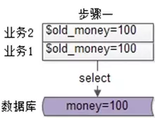

继续解答星球水友提问。
===
沈老师，我们有个业务，同一个用户在并发“查询，逻辑计算，扣款”的情况下，余额可能出现不一致，请问有什么优化方法么？
===
扣款的业务场景是怎样的？
用户购买商品的过程中，要对余额进行查询与修改，大致的业务流程如下：
第一步，从数据库查询用户现有余额：
SELECT money FROM t_yue WHERE uid=$uid;
不妨设查询出来的$old_money=100元。
第二步，业务层实施业务逻辑计算，比如：
（1）先查询购买商品的价格，例如是80元；
（2）再查询产品是否有活动，以及活动折扣，例如是9折；
（3）比对余额是否足够，足够时才往下走；
if($old_money> 80*0.9){
$new_money=$old_money-80*0.9=28
} else {
return "Not enough minerals";
}
第三步，将数据库中的余额进行修改。
UPDATE t_yue SET money=$new_money WHERE uid=$uid;
在并发量低的情况下，这个流程没有任何问题，原有金额100元，购买了80元的九折商品（72元），剩余28元。
同一个用户，并发扣款可能出现什么问题？
在分布式环境中，如果并发量很大，这种“查询+修改”的业务有一定概率出现数据不一致。
极限情况下，可能出现这样的异常流程：
步骤一，业务1和业务2并发查询余额，是100元。

画外音：这些并发查询，是在不同的站点实例/服务实例上完成的，进程内互斥锁肯定解决不了。
步骤二，业务1和业务2并发进行逻辑计算，算出各自业务的余额，假设业务1算出的余额是28元，业务2算出的余额是38元。
步骤三，业务1对数据库中的余额先进行修改，设置成28元。
业务2对数据库中的余额后进行修改，设置成38元。
此时异常出现了，原有金额100元，业务1扣除了72元，业务2扣除了62元，最后剩余38元。
画外音：假设业务1先写回余额，业务2再写回余额。
常见的解决方案？
对于此案例，同一个用户，并发扣款时，有小概率会出现异常，可以对每一个用户进行分布式锁互斥，例如：在redis/zk里抢到一个key才能继续操作，否则禁止操作。
这种悲观锁方案确实可行，但要引入额外的组件(redis/zk)，并且会降低吞吐量。
对于小概率的不一致，有没有乐观锁的方案呢？
对并发扣款进行进一步的分析发现：
（1）业务1写回时，旧余额100，这是一个初始状态；新余额28，这是一个结束状态。理论上只有在旧余额为100时，新余额才应该写回成功。
而业务1并发写回时，旧余额确实是100，理应写回成功。
（2）业务2写回时，旧余额100，这是一个初始状态；新余额28，这是一个结束状态。理论上只有在旧余额为100时，新余额才应该写回成功。
可实际上，这个时候数据库中的金额已经变为28了，所以业务2的并发写回，不应该成功。
如何低成本实施乐观锁？
在set写回的时候，加上初始状态的条件compare，只有初始状态不变时，才允许set写回成功，Compare And Set（CAS），是一种常见的降低读写锁冲突，保证数据一致性的方法。
此时业务要怎么改？
使用CAS解决高并发时数据一致性问题，只需要在进行set操作时，compare初始值，如果初始值变换，不允许set成功。
具体到这个case，只需要将：
UPDATE t_yue SET money=$new_money WHERE uid=$uid;
升级为：
UPDATE t_yue SET money=$new_money WHERE uid=$uid AND money=$old_money;
即可。
并发操作发生时：
业务1执行：
UPDATE t_yue SET money=28 WHERE uid=$uid AND money=100;
业务2执行：
UPDATE t_yue SET money=38 WHERE uid=$uid AND money=100;
这两个操作同时进行时，只可能有一个执行成功。
怎么判断哪个并发执行成功，哪个并发执行失败呢？
set操作，其实无所谓成功或者失败，业务能通过affect rows来判断：
写回成功的，affect rows为1
写回失败的，affect rows为0
总结
高并发“查询并修改”的场景，可以用CAS（Compare and Set）的方式解决数据一致性问题。对应到业务，即在set的时候，加上初始条件的比对即可。
优化不难，只改了半行SQL，但确实能解决问题。
但希望大家有收获，思路比结论重要。
欢迎大家继续提问，有问必答。
作业，为什么不能使用：
UPDATE t_yue SET money=money-$diff;